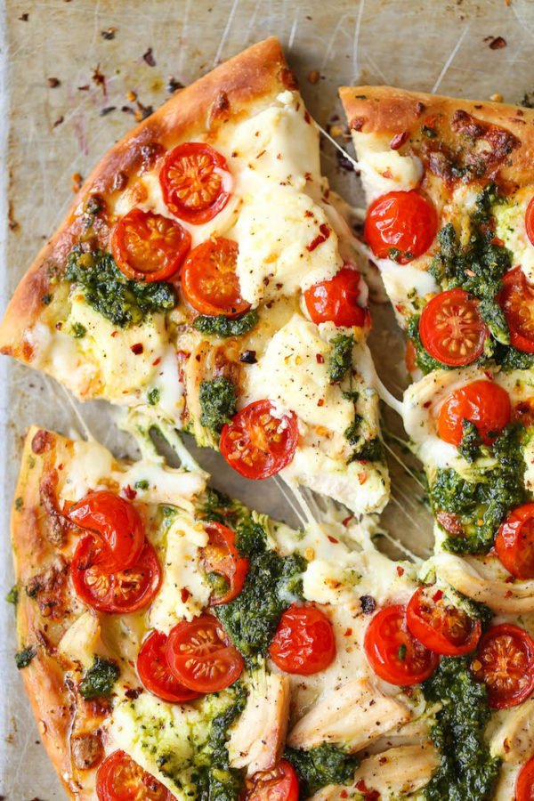

Pesto Pizza Recipe

Description
A different take on a classic pizza.
Ingredients
- 1 pizza crust
- 1/2 cup pesto
- 1 chopped tomato
- 1/2 cup green pepper
- 1 cup crumbled feta
Steps
- Preheat oven to 450 degrees F (230 degrees C).
- Spread pesto on pizza crust. Top with tomatoes, bell peppers, olives, red onions, artichoke hearts and feta cheese.
- Bake for 8 to 10 minutes, or until cheese is melted and browned.